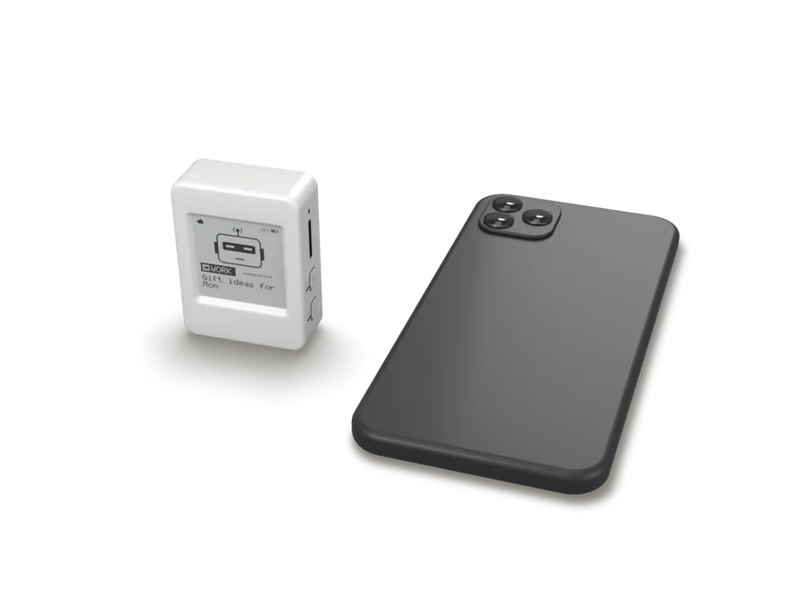
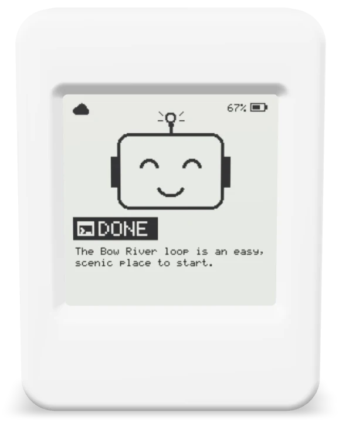
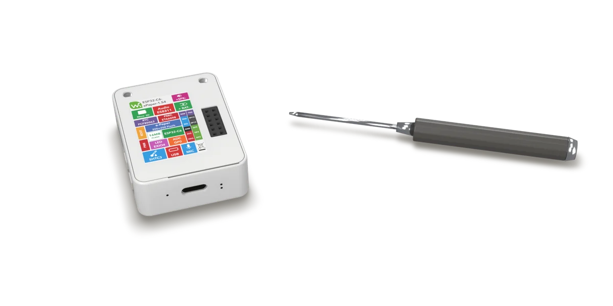

Ask now.
Read later.
Hold the button, ask, and get back to what you were doing.

No distractions
No phone to unlock and no notifications to pull you away.

Answers for later
It looks into things in the background. Come back to the answer whenever you like.

Two weeks on a charge
Use it every day. Charge it every couple of weeks.
Everything lands in one quiet list
On your phone or laptop. Tick off todos, see what’s due, read the answers, and play back what you said when you need to.




Free and open source
No subscription and nothing locked away. It runs on your own account, with the AI you already use.
Free
No plan to buy. You only pay your AI provider for what you use.
Open source
Read the code, change it, and run it yourself.
Your key, your agent
Plug in your own API key, or connect the agent you already use.
A star helps other people find it.
Details
- Size
- 39.8 × 53 × 16.9 mm
- Screen
- 1.54 inch e-paper, 200 × 200
- Battery
- About two weeks
- Offline
- Clips wait on the memory card until it’s back on Wi-Fi or your phone’s hotspot
- Charging
- USB-C
- Hardware
- Waveshare ESP32-C6 e-paper board